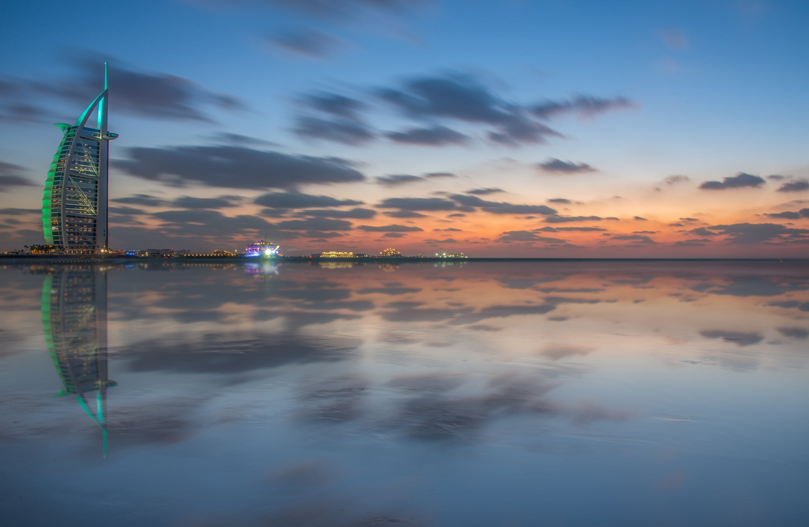

1. Dubai
Dubai looks like one the coolest, most over-the-top places in the world. From the Burj Khalifa, the man-made islands, indoor ski resort, and riding ATVs in the desert. This is definitely the place I'd like to visit the most.
Some of the places I want to travel to...
Dubai looks like one the coolest, most over-the-top places in the world. From the Burj Khalifa, the man-made islands, indoor ski resort, and riding ATVs in the desert. This is definitely the place I'd like to visit the most.
I came from a tropical place, so ocean and beaches are my favorite places to go to. Besides relaxing by the ocean and warm weather, I would also love to see what a volcano looks like in person.
If I were to travel to a European country, it would probably be Italy. Riding gondolas, eating real italian food, and seeing the Colosseum would be awesome.
No matter how old you are, Disney is always a fun place to be. Don't they call it the happiest place in the world? A week at Disney World would be a minimum. I heard this place is as big as San Francisco!
Last place on my list is New York. I actually lived here when I first came to America with my family from Bangladesh. I was only 3 or 4 at the time, so visiting this place as an adult would be a whole diff experience.